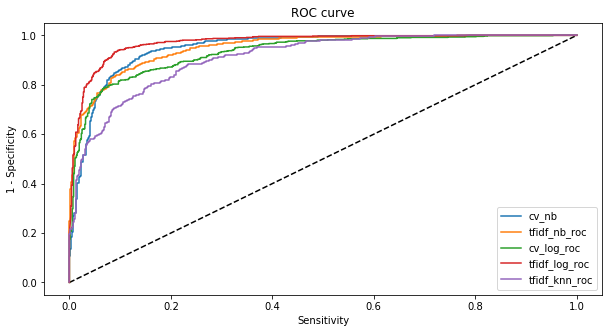

Being an avid redditor (lurker) myself, I’ve always wondered how unique certain subreddits are. For the uninitiated, subreddits are equivalent to sub-topics of a message board. As an example, the r/Singapore subreddit would cover all or most discussions about Singapore and can range from the fascinating to the truly … strange.
On the topic of subreddits, i’m a sucker for reading into ‘juicy’ subreddits that have posts spanning interpersonal relationships. It’s not uncommon for a random internet stranget to spill their heart out and treat other strangers as their ‘aunt agony’. Interestingly, there exists two similar subreddits relationship and confessions.
Wouldn’t it be cool if, on the basis of historical posts, we can develop a method to differentiate between r/relationships or r/confessions subreddit? Well, we can - and it is pretty straightforward!
Using common approaches in Natural Language Processing (NLP) - an increasingly popular Data Science topic - this post will go through some of the key steps invovled in this process. More importantly, it is to share an easily generalisable methodology that can be used on other subreddits as well.
A caveat, however, is that this method is constrained to text-based subreddits which only have text in their posts. Posts with images are not going to be used as it is outside of the scope of this post.
This post assumes some familiarity with Natural Language Processing. Do continue below if you are already familiar with the topic!
Importing our libraries
import numpy as np
import requests
import pandas as pd
import time
import random
import regex as re
import matplotlib.pyplot as plt
from nltk.corpus import stopwords # Import the stop word list
from nltk.stem import WordNetLemmatizer
from nltk import word_tokenize
from sklearn.metrics import classification_report, roc_curve
from sklearn.feature_extraction.text import CountVectorizer, TfidfVectorizer
from sklearn.pipeline import Pipeline
from sklearn.model_selection import train_test_split, GridSearchCV, cross_val_score
from sklearn.linear_model import LogisticRegression
from sklearn.naive_bayes import MultinomialNB, BernoulliNB, GaussianNB
from sklearn.neighbors import KNeighborsClassifier
import warnings
from psaw import PushshiftAPI
# After the imports
warnings.filterwarnings(action='ignore')
Data Acquisition
Scrap data using the PushShiftAPI to extract more than 1000 posts per subreddit to overcome Reddit’s imposed limitation.
%time
api = PushshiftAPI()
confessions = pd.DataFrame(list(api.search_submissions(subreddit='confessions',
filter=['author','title','subreddit','selftext'],
limit=5000)))
relationships = pd.DataFrame(list(api.search_submissions(subreddit='relationships',
filter=['author','title','subreddit','selftext'],
limit=5000)))
# store the scrapped data.
confessions.to_csv('./data/confessions.csv')
relationships.to_csv('./data/relationships.csv')
Data Cleaning
We create a filter_columns function that filters out the title, self text and subreddit name (our target)
We use the .count() function in our DataFrame object to understand the class balance of our dataset. Ideally, we want the number of entries of type confessions and/or relationships to be the same.
def filter_columns(df):
columns_to_retain = ['title','selftext','subreddit','author']
return df[columns_to_retain]
df_relationships_clean = filter_columns(df_relationships)
df_conf_clean = filter_columns(df_confessions)
`
display(df_relationships_clean['title'].count())
display(df_conf_clean['title'].count())
Below is a sample of our data:
df_relationships_clean.head()
.dataframe tbody tr th {
vertical-align: top;
}
.dataframe thead th {
text-align: right;
}
df_conf_clean.head()
.dataframe tbody tr th {
vertical-align: top;
}
.dataframe thead th {
text-align: right;
}
Prior to this, we may wish to remove posts that have ‘Moderator’ as an author to train our model on more ‘authentic’ posts.
df_relationships_clean.loc[:,'author'] = df_relationships_clean.author.map(lambda x : x.lower())
df_conf_clean.loc[:,'author'] = df_conf_clean.author.map(lambda x : x.lower())
df_relationships_clean = df_relationships_clean[~df_relationships_clean.author.str.contains('moderator')]
df_conf_clean = df_conf_clean[~df_conf_clean.author.str.contains('moderator')]
df_relationships_clean.isna().sum()
title 0
selftext 16
subreddit 0
author 0
dtype: int64
df_conf_clean.isna().sum()
title 0
selftext 739
subreddit 0
author 0
dtype: int64
We also observe empty selftext in both subreddits. we shall drop rows with empty selftext.
df_relationships_clean = df_relationships_clean.dropna(axis=0)
df_conf_clean = df_conf_clean.dropna(axis=0)
Ensure only posts with selftext more than 10 words are selected.
df_relationships_clean ['selftext_len'] = df_relationships_clean .selftext.map(lambda x: len(x.split()))
df_relationships_clean = df_relationships_clean [df_relationships_clean .selftext_len > 10]
df_conf_clean['selftext_len'] = df_conf_clean.selftext.map(lambda x: len(x.split()))
df_conf_clean = df_conf_clean[df_conf_clean.selftext_len > 10]
Next, we drop our duplicates:
df_relationships_clean.drop_duplicates(inplace=True)
df_conf_clean.drop_duplicates(inplace=True)
Displaying our class balances after dropping the rows:
display(df_relationships_clean.count())
display(df_conf_clean.count())
For relationships:
title 2925
selftext 2925
subreddit 2925
author 2925
selftext_len 2925
dtype: int64
For confessions:
title 3893
selftext 3893
subreddit 3893
author 3893
selftext_len 3893
dtype: int64
Seeing that a value of 2900 is the limiting number, we randomly select 2900 entries from both sets.
subset_relationships_clean = df_relationships_clean.sample(n=2900,random_state=666)
subset_conf_clean = df_conf_clean.sample(n=2900,random_state=666)
Class Balance
# combine both subsets into a DF
df_pre = subset_relationships_clean.append(subset_conf_clean,ignore_index=True)
df_pre.subreddit.value_counts(normalize=True)
Target Encoding
We then perform an encoding of our target : 1 corresponds to posts of type confessions while 0 corresponds to posts of type relationships.
# create target class columns 0 = relationships, 1 = confessions - encoding
df_pre['label'] = df_pre.subreddit.map({'relationships':0,'confessions':1}).astype('int')
df_pre.head()
.dataframe tbody tr th {
vertical-align: top;
}
.dataframe thead th {
text-align: right;
}
Cleaning Function
Ensure formatting of text by:
- Converting all to lower cases
- removing groups of words in parentheses
- remove line breaks
- removing special characters
We encapsulate this cleaning into the function clean_text
# convert the stop words to a set.
stops = set(stopwords.words('english'))
def clean_text(text):
#01 convert titles, selftext into lowercase
lower_text = text.lower()
#02 remove brackets and parenthesis from the title and selftext.
no_br_paret_text = re.sub(r'\(.+?\)|\[.+?\]',' ',str(lower_text))
#03 remove special characters
removed_special = re.sub(r'[^0-9a-zA-Z ]+',' ',str(no_br_paret_text))
#04 remove xamp200b
remove_xamp200b = re.sub(r'ampx200b',' ',str(removed_special))
#05 remove digits
result = re.sub(r'\d+', '', remove_xamp200b).split()
#06 split into individual words
meaningful_words = [w for w in result if not w in stops]
#07 Join the words back into one string separated by space,
# and return the result.
return(" ".join(meaningful_words))
df[['title','selftext']] = df_pre[['title','selftext']].applymap(clean_text)
df.head()
A sample of our pre-cleaned data:
.dataframe tbody tr th {
vertical-align: top;
}
.dataframe thead th {
text-align: right;
}
Post Cleaning
pd.DataFrame(data=zip(df_pre['selftext'],df['selftext']),columns=['pre','post']).head(5)
.dataframe tbody tr th {
vertical-align: top;
}
.dataframe thead th {
text-align: right;
}
Data Exploration
Split title and self text into two classifiers where the output of title_classifier and self_text classifier would provide indication of which subreddit the posts belong to.
#split titles, and self text into seperate df
df_title = df[['title','label']]
df_selftext = df[['selftext','label']]
def get_freq_words(sparse_counts, columns):
# X_all is a sparse matrix, so sum() returns a 'matrix' datatype ...
# which we then convert into a 1-D ndarray for sorting
word_counts = np.asarray(sparse_counts.sum(axis=0)).reshape(-1)
# argsort() returns smallest first, so we reverse the result
largest_count_indices = word_counts.argsort()[::-1]
# pretty-print the results! Remember to always ask whether they make sense ...
freq_words = pd.Series(word_counts[largest_count_indices],
index=columns[largest_count_indices])
return freq_words
# Let's use the CountVectorizer to count words for us for each class
# create mask
X_1 = df_selftext[df_selftext['label'] == 1]
X_0 = df_selftext[df_selftext['label'] == 0]
cvt = CountVectorizer(ngram_range=(1,1),stop_words='english')
X_1_all = cvt.fit_transform(X_1['selftext'])
X_0_all = cvt.fit_transform(X_0['selftext'])
columns_1 = np.array(cvt.get_feature_names()) # ndarray (for indexing below)
columns_0 = np.array(cvt.get_feature_names())
freq_words_1 = get_freq_words(X_1_all, columns_1)
freq_words_0 = get_freq_words(X_0_all, columns_0)
print('Confessions:')
display(freq_words_1[:10])
print("\n")
print('Relationships:')
display(freq_words_0[:10])
Here are some key words that appear in the Confessions data set - which would mean that the words landlord,jeopardise, etc. would make it more than likely for the post to be of confessions class.
Confessions:
landlord 3063
msg 2325
jeopardise 1979
teachings 1721
eyes 1674
pur 1506
user 1438
overworking 1405
generic 1133
lacking 1109
dtype: int64
Same for relationships:
Relationships:
like 6690
time 4761
know 4694
want 4630
really 4235
feel 4000
relationship 3744
said 3245
things 3070
told 2999
dtype: int64
Data Modeling
Train Test Split
Here, we start with our model development. Before that, we perform a train/test split to ensure that we can validate our model performance.
X_text = df_selftext['selftext']
y_text = df_selftext['label']
X_text_train, X_text_test, y_text_train, y_text_test = train_test_split(X_text,y_text,stratify=y_text)
Model Playground
We create the class LemmaTokenizer to do both lemmatize each word of each entry. I.e. given a list of words, we lemmatize each word.
Firstly, we try the Naive Bayes model - MultinomialNB as there are multiple nominal features in the form of the various tokens.
classifiers = []
vectorizers = [('cvec', CountVectorizer(stop_words='english',tokenizer=LemmaTokenizer())),
('tfvec', TfidfVectorizer(stop_words='english',tokenizer=LemmaTokenizer()))]
for vectorizer in vectorizers:
bayes_pipe = Pipeline([
(vectorizer),
('mnb', MultinomialNB())
])
scores = cross_val_score(bayes_pipe, X_text_train, y_text_train,cv=5,verbose=1)
b = bayes_pipe.fit(X_text_train, y_text_train)
y_pred = b.predict(X_text_test)
print(classification_report(y_text_test, y_pred, target_names=['class 0','class 1']))
print('Cross val score for mnb classifier using {} vectorizer is {}'.format(vectorizer[0],scores))
print('Accuracy score for mnb classifier using {} vectorizer is {}'.format(vectorizer[0],bayes_pipe.score(X_text_test, y_text_test)))
precision recall f1-score support
class 0 0.77 0.95 0.85 725
class 1 0.93 0.71 0.81 725
accuracy 0.83 1450
macro avg 0.85 0.83 0.83 1450
weighted avg 0.85 0.83 0.83 1450
Cross val score for mnb classifier using cvec vectorizer is [0.80114943 0.80689655 0.86321839 0.81724138 0.79770115]
Accuracy score for mnb classifier using cvec vectorizer is 0.8289655172413793
precision recall f1-score support
class 0 0.65 0.99 0.78 725
class 1 0.98 0.46 0.63 725
accuracy 0.73 1450
macro avg 0.82 0.73 0.71 1450
weighted avg 0.82 0.73 0.71 1450
Cross val score for mnb classifier using tfvec vectorizer is [0.71149425 0.70689655 0.74712644 0.73448276 0.7045977 ]
Accuracy score for mnb classifier using tfvec vectorizer is 0.7282758620689656
Thus the recall scores for multinomial NB with countvectorizer seems to provide higher recall when compared to the tfidf vectorizer.
In the meantime, we create a function to encapsulate our evaluation process such that it returns only the false positive rate and true positive rate with a sklearn processing pipeline.
# store predicted_proba scores for later evaluation under ROC curve
def generate_roc(pipeline):
b = pipeline.fit(X_text_train, y_text_train)
print(f"Train Score:{round(b.score(X_text_train, y_text_train),2)} / Test Score {round(b.score(X_text_test, y_text_test),2)}")
fpr, tpr, _ = roc_curve(y_text_test, b.predict_proba(X_text_test)[:,1],pos_label=1)
return [fpr,tpr]
Rewriting the CountVectorizer Naive Bayes and TF-IDF Naive Bayes into their respective pipelines:
cv_bayes_pipe = Pipeline([
(vectorizers[0]),
('mnb', MultinomialNB())
])
tfidf_bayes_pipe = Pipeline([
(vectorizers[1]),
('mnb', MultinomialNB())
])
Pipeline for Logistic Regression Baseline
pipe = Pipeline([
('cvec', CountVectorizer(stop_words='english',tokenizer=LemmaTokenizer())),
('lr', LogisticRegression(solver='saga',max_iter=300))
])
Obtain hyperparameters for our vectorizer and logistic regressor.
We can use a grid search to find the optimal hyperparameters for our pipelines:
pipe_params = {
'cvec__max_features': [2500, 3000, 3500],
'cvec__ngram_range': [(1,1), (1,2)],
'lr__penalty' : ['elasticnet'],
'lr__C' : np.arange(0.1,1,0.1),
'lr__l1_ratio' : np.arange(0,1.1,0.2)
}
gs = GridSearchCV(pipe, param_grid=pipe_params, cv=5,verbose=1,n_jobs=-1)
gs.fit(X_text_train, y_text_train)
print(gs.best_score_)
0.9154022988505747
gs.best_params_
{'cvec__max_features': 2500,
'cvec__ngram_range': (1, 1),
'lr__C': 0.1,
'lr__l1_ratio': 1.0,
'lr__penalty': 'elasticnet'}
The best score for our logistic regression pipeline:
gs.best_estimator_.score(X_text_test,y_text_test)
0.9186206896551724
Using the hyperparameters:
# try model on title
optimal_pipe = Pipeline([
('cvec', CountVectorizer(tokenizer=LemmaTokenizer(),max_features=2500,ngram_range=(1,1))),
('lr', LogisticRegression(solver='saga',max_iter=300,C=0.1,l1_ratio=1.0,penalty='elasticnet'))
])
X_title = df_title['title']
y_title = df_title['label']
optimal_pipe.fit(X_text_train, y_text_train)
We try the model on our title dataset to obtain the accuracy of the model to classify the subreddit from titles alone.
y_logr_pred = optimal_pipe.predict(X_text_test)
print(classification_report(y_text_test, y_logr_pred, target_names=['class 0','class 1']))
precision recall f1-score support
class 0 0.55 1.00 0.71 725
class 1 0.99 0.18 0.31 725
accuracy 0.59 1450
macro avg 0.77 0.59 0.51 1450
weighted avg 0.77 0.59 0.51 1450
Next, we explore the use tfidfvectorizer instead of countvectorizer to account for document similarity
tfidf_pipe = Pipeline([
('tfvec', TfidfVectorizer(stop_words='english',tokenizer=LemmaTokenizer())),
('lr', LogisticRegression(solver='saga',max_iter=300))
])
tfidf_params = {
'tfvec__max_features': [2500, 3000, 3500],
'tfvec__ngram_range': [(1,1), (1,2)],
'lr__penalty' : ['elasticnet'],
'lr__C' : np.arange(0.1,1,0.1),
'lr__l1_ratio' : np.arange(0,1.1,0.2)
}
gs = GridSearchCV(tfidf_pipe, param_grid=tfidf_params, cv=3,verbose=1,n_jobs=-1)
gs.fit(X_text_train, y_text_train)
print(gs.best_score_)
0.9183908045977012
It seems that tfidf vectorizer performs best with the logistic regression model.
tfidf_best_pipe = Pipeline([
('tfvec', TfidfVectorizer(max_features=3500,ngram_range=(1,1),stop_words='english',tokenizer=LemmaTokenizer())),
('lr', LogisticRegression(solver='saga',max_iter=300,C=0.9,l1_ratio=1.0,penalty='elasticnet'))
])
# test model against test text data and rest of titles
y_text_tfidf_pred = gs.best_estimator_.predict(X_text_test)
y_title_tfidf_pred = gs.best_estimator_.predict(X_title)
print("Text Report (results based on test data) \n" +
classification_report(y_text_test, y_text_tfidf_pred, target_names=['class 0','class 1']))
print("Titles (all titles) Report \n" +
classification_report(y_title, y_title_tfidf_pred, target_names=['class 0','class 1']))
Text Report (results based on test data)
precision recall f1-score support
class 0 0.93 0.91 0.92 725
class 1 0.91 0.94 0.92 725
accuracy 0.92 1450
macro avg 0.92 0.92 0.92 1450
weighted avg 0.92 0.92 0.92 1450
Titles (all titles) Report
precision recall f1-score support
class 0 0.92 0.17 0.29 2900
class 1 0.54 0.98 0.70 2900
accuracy 0.58 5800
macro avg 0.73 0.58 0.49 5800
weighted avg 0.73 0.58 0.49 5800
While the optimised model with tfidf vectorizer performs remarkably well with high precision and recall, when used with the titles dataset, we can see that that it is somewhat overfit, unable to classify the titles correctly.
# look at sample predictions
pd.DataFrame(data=zip(X_text_test,y_text_test,y_text_tfidf_pred),columns=['text','actual','predicted']).head(5)
.dataframe tbody tr th {
vertical-align: top;
}
.dataframe thead th {
text-align: right;
}
Model Evaluation & Summary
cv_log_roc = generate_roc(optimal_pipe)
tfidf_log_roc = generate_roc(tfidf_best_pipe)
cv_nb_roc = generate_roc(cv_bayes_pipe)
tfidf_nb_roc = generate_roc(tfidf_bayes_pipe)
tfidf_knn_roc = generate_roc(knn_best_pipe)
Train Score:0.59 / Test Score 0.59
Train Score:0.93 / Test Score 0.92
Train Score:0.89 / Test Score 0.83
Train Score:0.81 / Test Score 0.73
Train Score:1.0 / Test Score 0.81
# Evaluation
roc_data ={
'cv_nb' : cv_nb_roc,
'tfidf_nb_roc' : tfidf_nb_roc,
'cv_log_roc' : cv_log_roc,
'tfidf_log_roc' : tfidf_log_roc,
'tfidf_knn_roc' : tfidf_knn_roc
}
#### Plot figure
plt.figure(1,figsize=(10,5))
plt.plot([0, 1], [0, 1], 'k--')
for key,roc in roc_data.items():
plt.plot(roc[0], roc[1], label=key)
plt.xlabel('Sensitivity')
plt.ylabel('1 - Specificity')
plt.title('ROC curve')
plt.legend(loc='best')
plt.savefig("./img/roc_curve.png",dpi=300)
plt.show()

The crossvectorizer + logistic regression model seems to perform similar to the tfidf vectorizer and logistic regression model. When looking at the accuracy score of all the models, the tfidf+ logistic regression model performs the best with an accuracy of 92% in terms of predicting if the selftext is either an r/confessions or r/relationships post.